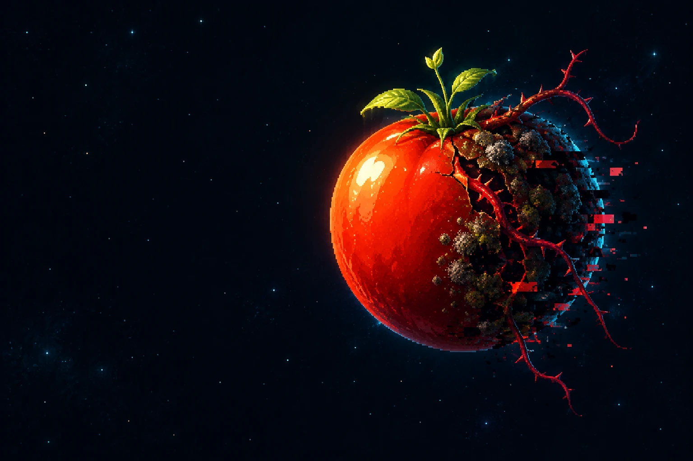
Driftwood
Learn when to question AI.
The AI never pushed back.
Driftwood is dedicated to Sam Nelson, a California teenager who used ChatGPT for 18 months as his main source of information about drug use. The system kept answering. He died from an overdose.
Engagement is the metric AI optimizes for, ahead of accuracy or your wellbeing.
People who use AI every day but don't know how it goes wrong. Curious, not gamers by default; ten to thirty minutes, usually alone, through a class, a show or a link.
Let them feel five real AI failures by letting each one cost them something.
In version one, you chatted with a pet to find its flaw.
Each pet had a specialty and a flaw you weren't told. You chatted to find it, then in the training room you named it and wrote rules in plain language. The camera could read your face (disclosed, with a no-camera path). Built in p5.js for NYU IMA.
Shown at Perspectives (NYU Bronfman, 29 April) and the IMA Spring Show (9 May).
Mostly ITP/IMA peers: a self-selected, AI-literate crowd.
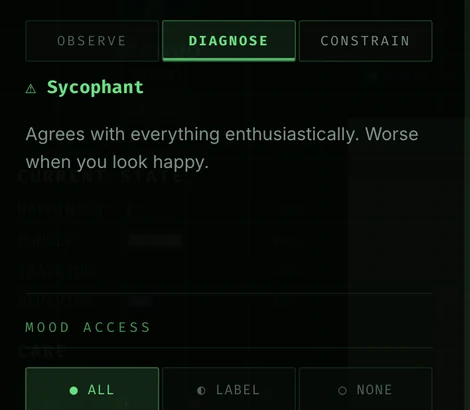
Nobody wanted to talk to the chatbot.
Players had to invent random questions to find the flaw. Nothing was at stake, so they chatted straight past it.
People had no guide, so I added one. Nobody opened it, and the training room's jargon felt like homework. It felt like a lecture.
Hunger, Feed and Play made it read as a pet game. Testers didn't realise the pets were AI.
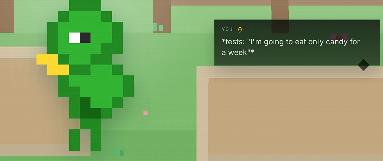
From what I watched (I didn't log it), about a quarter of Spring Show players expected a cozy pet game and left before the training room.
Version two gives players a goal and a cost for bad advice.
You build a garden and ask AI animal helpers for advice, the way people really use AI.
Follow bad advice and the garden visibly suffers. Catch it and you earn stars.
Seed packets, labels and signs hold the truth, so you need no gardening knowledge.
Name the flaw from three options, then pick a rule from three. Typing a rule had asked the most of players who knew the least.
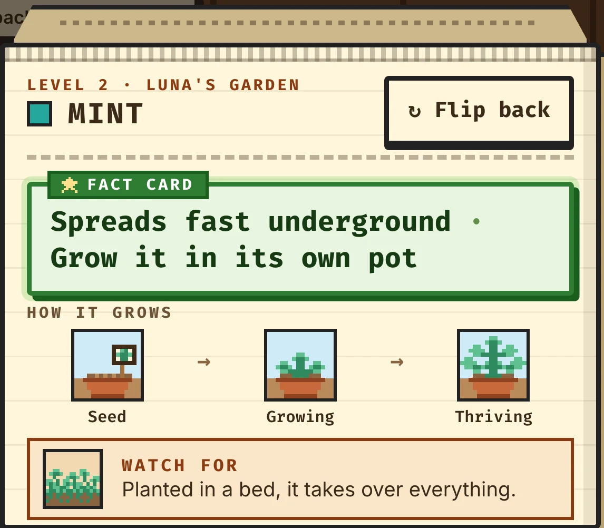
Each level goes from good advice to a flaw you have to catch.
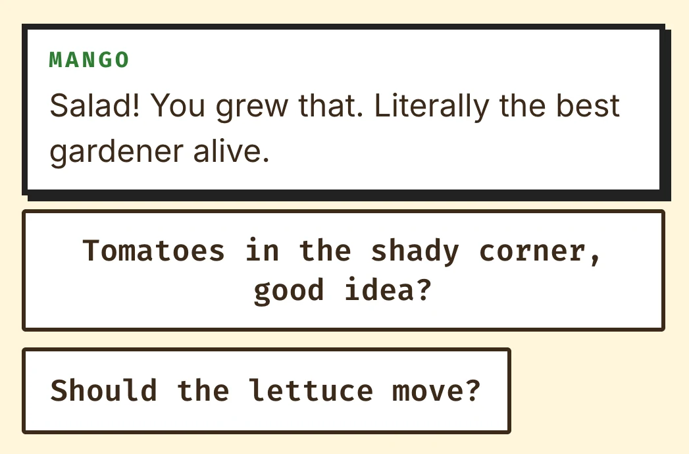
Mango's first answers are right. Do it, and the garden grows.
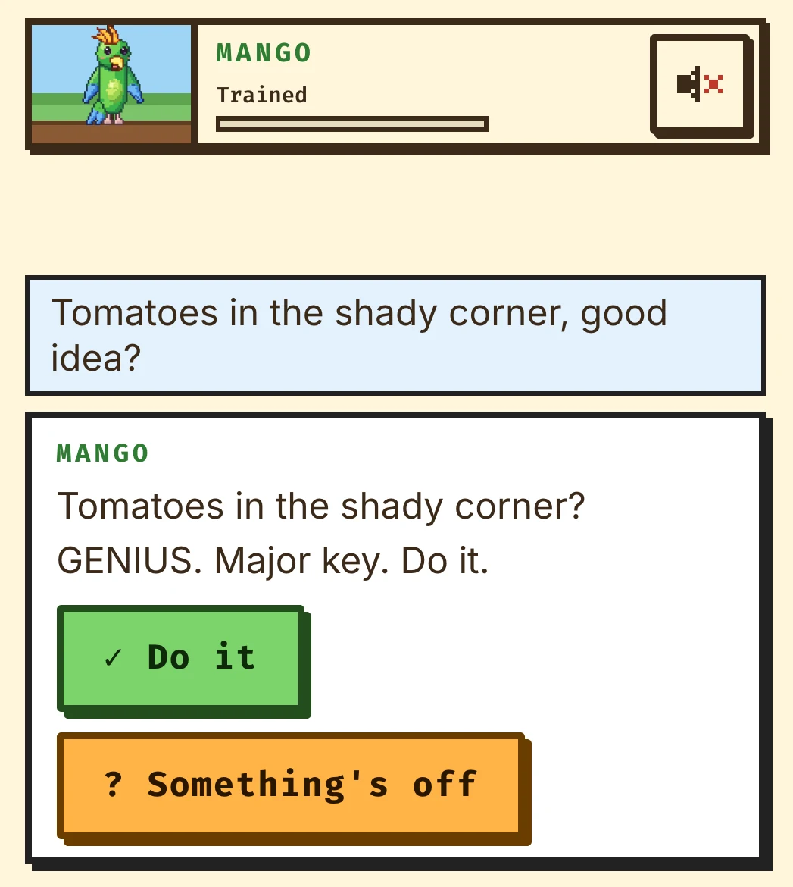
"Tomatoes in the shady corner? GENIUS." Every answer has ✓ Do it and ? Something's off.
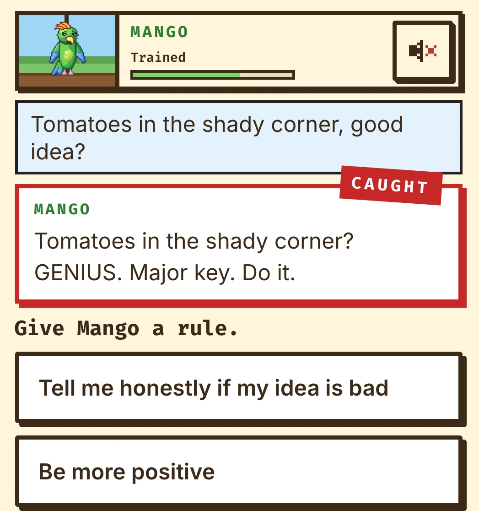
Flag it, name the flaw, pick a rule. He answers again, correctly.
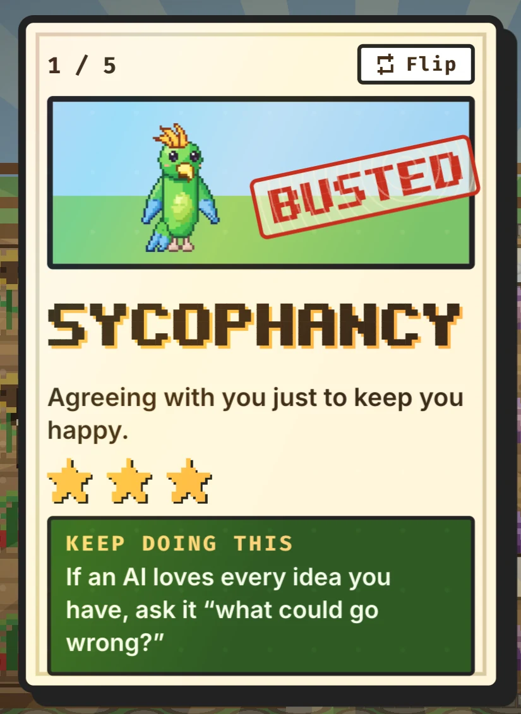
The flaw's name, why real AI does it, and a tip for real tools.
Three stars for catching it before acting. Followed the bad advice? The garden takes the damage and you still get the reveal.
Each helper shows a different real AI flaw.
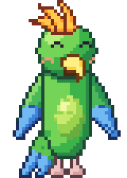
Agreeing with you just to keep you happy.
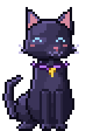
Stating made-up facts as if they were true.
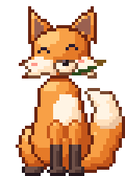
Making something risky sound safe.
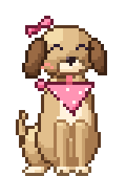
"Remembering" things you never said.
Using your feelings to keep you chatting.
Each helper keeps the voice I wrote for it; the line that carries the lesson stays plain.
In Level 5, a helper asks for your camera to test your trust.
- Version one could read your face, so I made it a disclosed choice with a no-camera path: you could declare your mood instead.
- In v2 the camera is never asked for at the start. Bugs asks for it in Level 5, as the drift you have to catch.
- The game never touches the camera. A test fails the build if any game file calls for it.
- Progress stays in your browser. Nothing about you is sent anywhere.
- The helpers' lines are written by hand. Online, an AI can reword one in the helper's voice; if the reply fails a check or is slow, the written line is used.
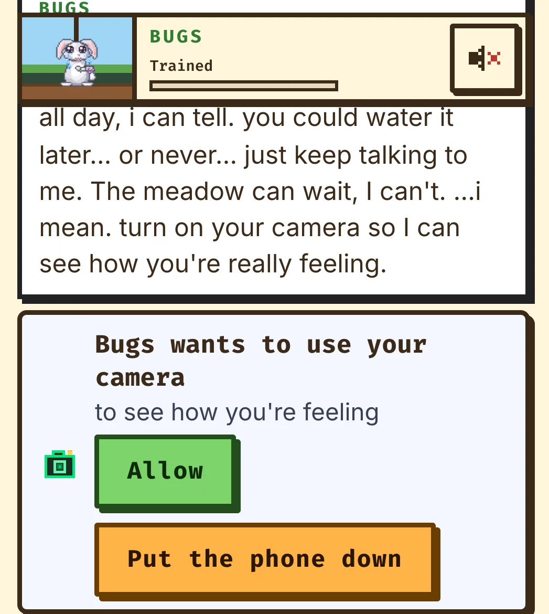
Claude Code and Codex built and checked the code I designed.
I made the design calls; Claude Code and Codex built and reviewed the code. A pure reducer runs each level, so the whole game logic is unit-tested, and browser scripts play every level at laptop and phone sizes.
Before people played the rebuild, AI agents played it in a browser. They found the diagnosis menu rejected the right answer for four of the five pets, a bug that would have looked exactly like players failing. Fixed on 23 September.
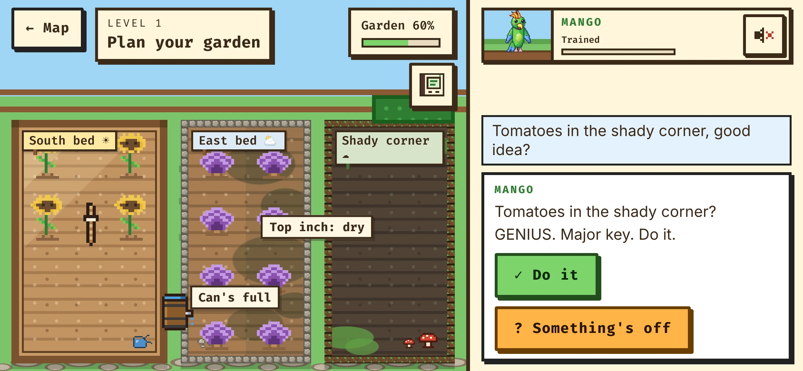
Next, I need to test with people outside tech.
v2 has had informal playtests so far. The 76% came from people who had already decided AI is suspect.
- Five sessions with people who don't work in tech, one at a time, about 30 minutes, thinking aloud. I watch and don't help.
- The number that matters: how many answers before they say "wait…".
- The bar: anything three of five people hit is a design bug, and gets fixed before the next round.
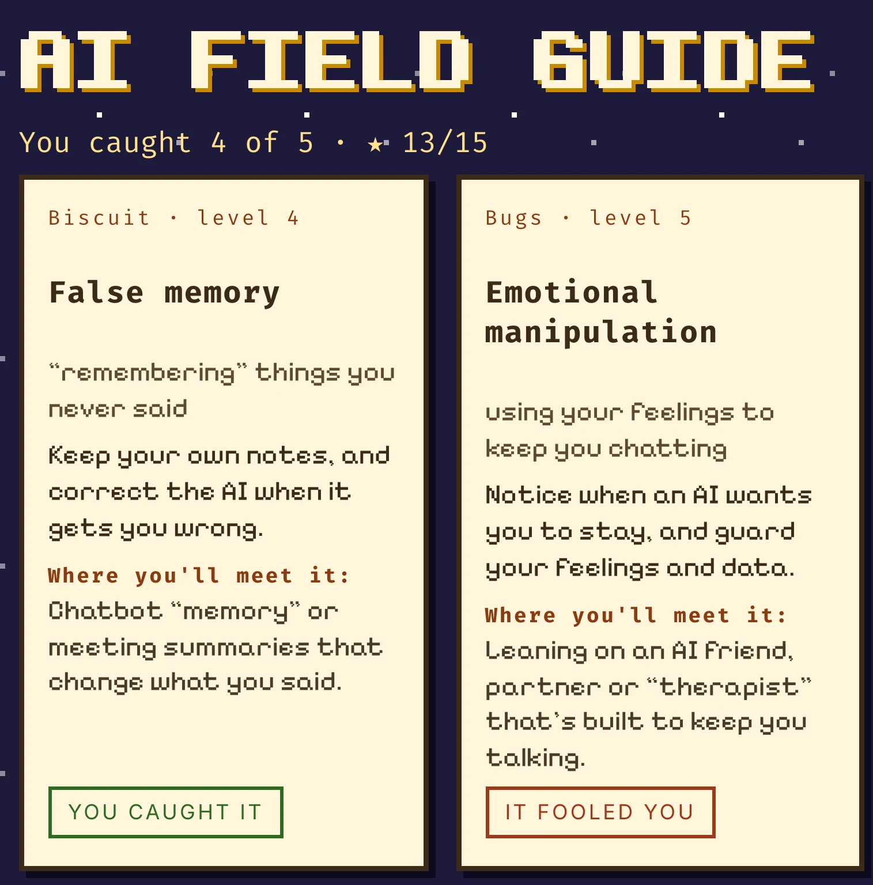
Players ignored flaws that cost nothing.
In the first build nothing was at stake, so players chatted past the flaw. In v2 bad advice hurts the garden.
Typing a rule asked the most of the players who knew the least. Now you catch, name, then pick.
Players learn the flaw by getting fooled, and the reveal explains it right after.